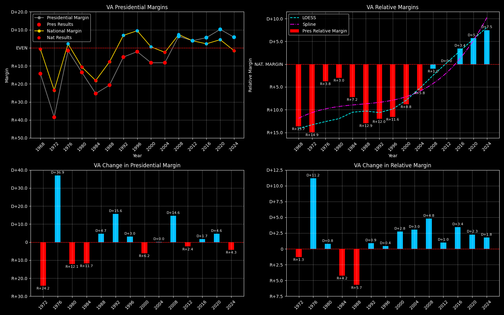

← Back to Map

Virginia (VA) statewide
Virginia (VA) — Data
| Year | D | R | Margin | Rel. Margin | Nat'l Margin | Margin Δ | Rel. Margin Δ | Nat'l Margin Δ |
|---|
| 1976 | 813,896 | 836,554 | R+1.4 | R+3.6 | D+2.3 | 0 | 0 | 0 |
| 1980 | 752,174 | 989,609 | R+13.6 | R+3.3 | R+10.3 | R+12.3 | D+0.3 | R+12.6 |
| 1984 | 796,250 | 1,337,078 | R+25.4 | R+7.1 | R+18.2 | R+11.7 | R+3.8 | R+7.9 |
| 1988 | 859,799 | 1,309,162 | R+20.7 | R+13.1 | R+7.7 | D+4.6 | R+5.9 | D+10.6 |
| 1992 | 1,038,650 | 1,150,517 | R+5.1 | R+12.4 | D+7.2 | D+15.6 | D+0.7 | D+14.9 |
| 1996 | 1,091,060 | 1,138,350 | R+2.1 | R+11.7 | D+9.6 | D+3.0 | D+0.6 | D+2.4 |
| 2000 | 1,217,290 | 1,437,490 | R+8.3 | R+8.8 | D+0.5 | R+6.2 | D+2.9 | R+9.1 |
| 2004 | 1,454,742 | 1,716,959 | R+8.3 | R+5.8 | R+2.5 | D+0.0 | D+3.0 | R+3.0 |
| 2008 | 1,959,532 | 1,725,005 | D+6.4 | R+1.2 | D+7.5 | D+14.6 | D+4.6 | D+10.0 |
| 2012 | 1,971,820 | 1,822,522 | D+3.9 | R+0.1 | D+4.0 | R+2.4 | D+1.1 | R+3.5 |
| 2016 | 1,981,473 | 1,769,443 | D+5.7 | D+3.3 | D+2.3 | D+1.7 | D+3.4 | R+1.7 |
| 2020 | 2,413,568 | 1,962,430 | D+10.3 | D+5.8 | D+4.5 | D+4.7 | D+2.4 | D+2.2 |
| 2024 | 2,335,395 | 2,075,085 | D+5.9 | D+7.4 | R+1.5 | R+4.4 | D+1.6 | R+6.0 |